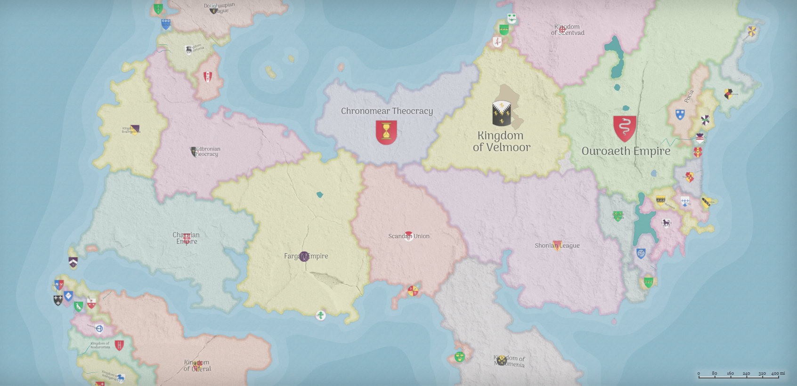
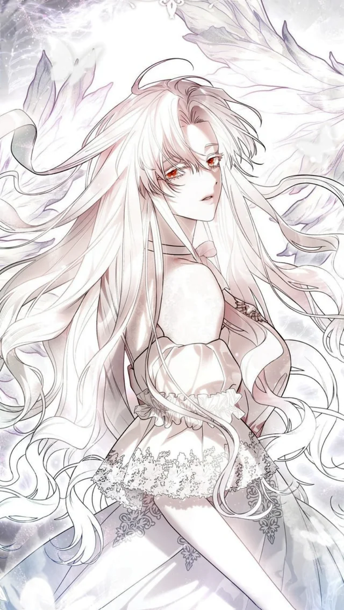
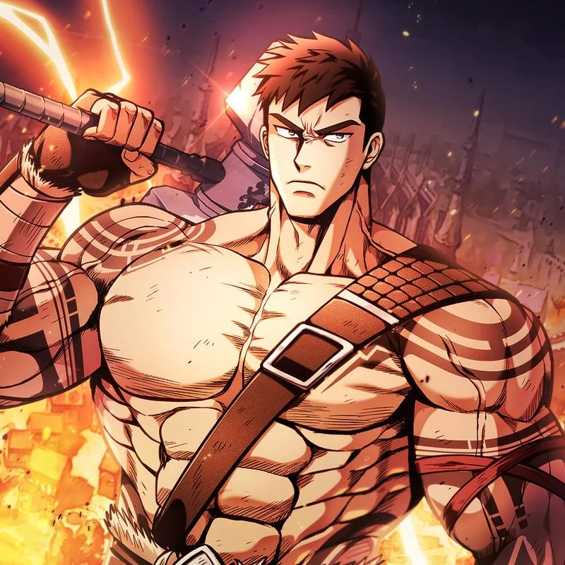
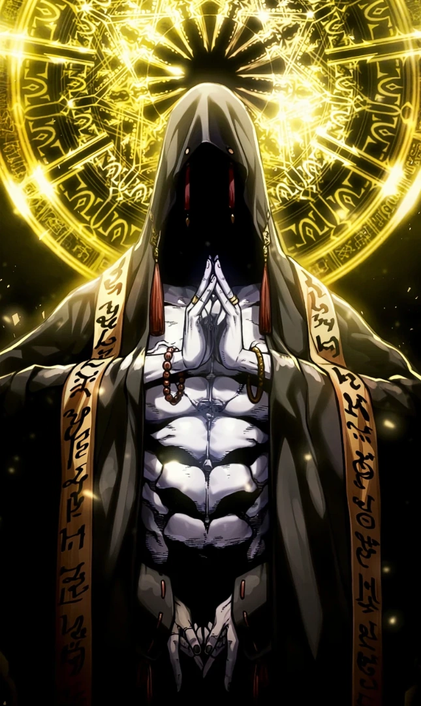
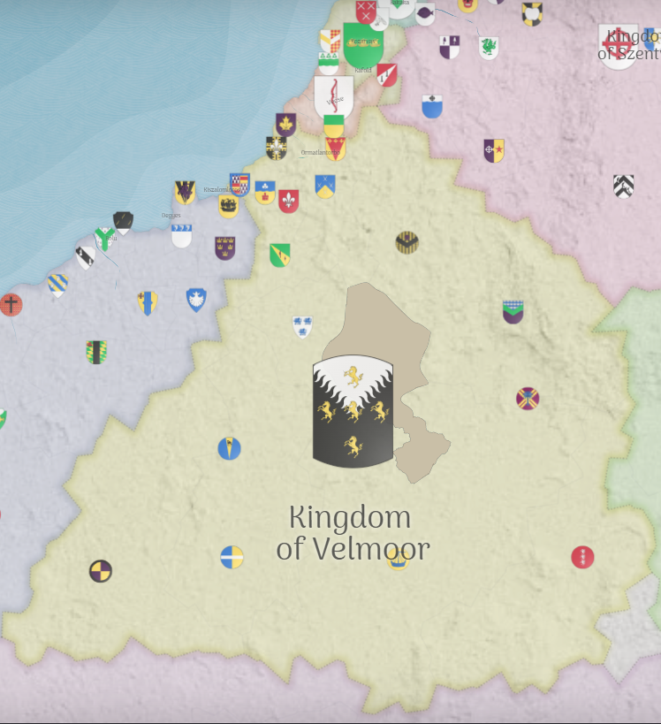
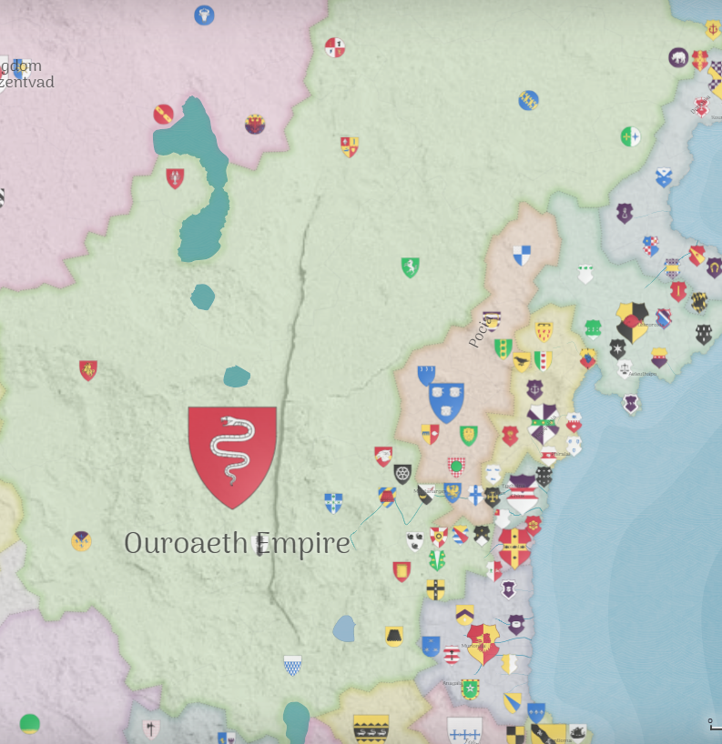
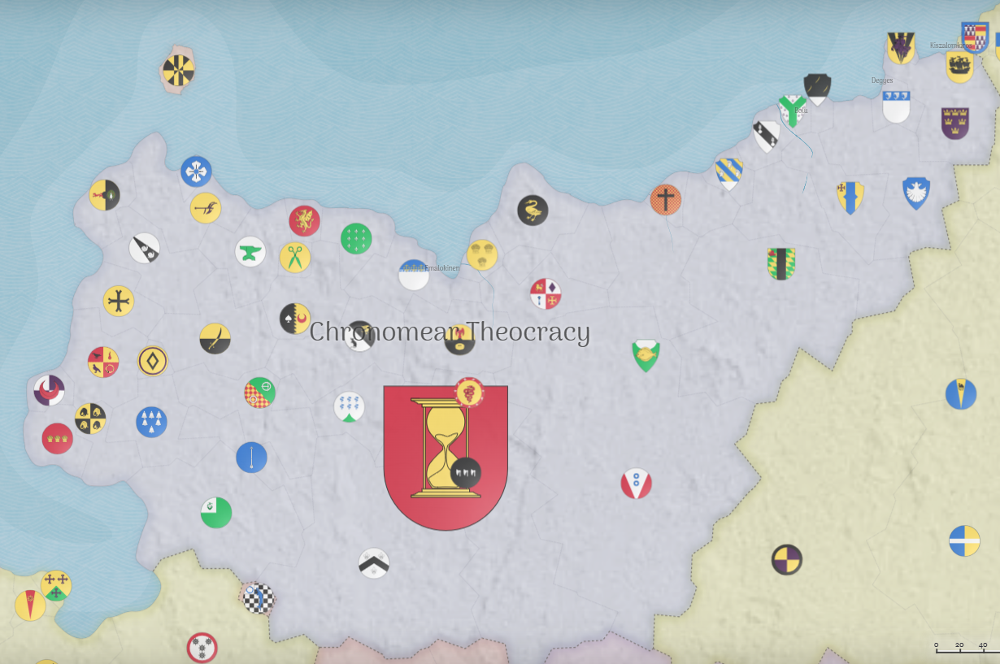

Hi, I'm a Rayan Nibir.
Welcome to my portfolio website. We are currently under development.
View My WorkAbout Me
I am a student completing my computer science degree this summer. I'm passionate about building software and solving problems through code. My academic journey has given me a strong foundation in computer science principles, and I'm eager to apply my skills to real-world projects.
Skills
- Python
- JavaScript
- Systems-level Programming
My Projects
System Resource Analyzer
A program that analyzes resource system usage and generates reports on applications being used and resource consumption. Built for efficient system administration tasks tracking.
- Python
- Systems Programming
Web Task Manager
A responsive web application for managing daily tasks with a modern UI. MAde for keeping track of class assignments..
- JavaScript
- HTML/CSS
Network Packet Sniffer
A low-level network monitoring tool that captures and analyzes TCP/IP packets in real-time. Designed for network security research and debugging.
- Python
- Socket Programming
Contact Me
The World of Acheronia
Acheronia is a realm shrouded in mystery and ancient magic, where eldritch horrors dwell beneath the surface and great powers vie for control. A world of dark forests, crumbling ruins, and forgotten gods, where the line between reality and nightmare blurs.
From the towering spires of the Kingdom to the war-torn borders of the Empire, and the sacred halls of the Theocratic State, Acheronia is a land of conflict, intrigue, and untold secrets waiting to be discovered.

World Overview
- Geography: Vast continents with diverse biomes from frozen tundras to volcanic wastelands
- Magic System: Ancient eldritch magic flows through ley lines, granting power to those who dare to wield it
- History: Thousands of years of civilization, marked by the rise and fall of empires
- Current Era: Age of Uncertainty, where old alliances crumble and new threats emerge
Notable Characters

Evanescia Deluna
The Enchantress of Coiled Hearts
Evanescia Deluna is a young noblewoman of Velmoor who suffered from an unidentified, chronic illness that rendered her frail yet possessed of a striking, luminous beauty. Following her death, which defied the healing efforts of the church, she was resurrected by her lover, Razazel Cardinus, who sacrificed his own heart to restore her. Her return to life marks a significant transformation, leaving her with crimson eyes and the permanent presence of two distinct heartbeats within her chest.
Valerius possesses exceptional stealth capabilities, able to move unseen through even the most heavily guarded areas. His mastery of forbidden arts grants him access to powers that few dare to wield.
His strength is considerable, though not his primary asset. He relies more on cunning and magical abilities than brute force in combat situations.
His connection to the void allows him to manipulate shadows and teleport short distances, making him nearly impossible to track or capture.
Corvyn Sors Rejicio
The Oracle of Death
Gifted with visions of deadly future that have yet to come, Corvyn saves everyone except those he is not meant to save. Plauged by constant nightmares from the future, his only purpose is to save others. But can he save himself from what is to come?
Seraphina's visions come unbidden, showing her fragments of possible futures. She has learned to interpret these prophecies and guide those who seek her wisdom toward their destined paths.
Her magical abilities are formidable, though she prefers to use them for divination rather than combat. She can sense the flow of magic throughout Acheronia and detect disturbances in the natural order.
Her presence commands respect and awe, and her words carry weight with both commoners and nobility alike. Many seek her counsel in times of crisis.

Razazel Cardinus
The Blade of Dawn
Razazel Cardinus is an enigmatic and formidable figure of supernatural origin who possesses an imposing physical stature, standing over six and a half feet tall with a broad, powerful build. He is identified by his soaked, black hair, bare chest, and striking black eyes marked by three white lines that resemble cracks. Driven by profound, singular devotion to Evanescia Deluna, Razazel was willing to sacrifice his own heart—which he possessed in triplicate—to resurrect her after conventional medicine failed.
Kaelen's strength is legendary, honed through decades of brutal combat. His blade has never known defeat, and his physical prowess is unmatched in all of Acheronia.
His combat skills are unparalleled, having mastered every form of warfare known to man. He can defeat entire armies single-handedly when the situation demands it.
Though not a natural leader, soldiers follow him willingly into battle, inspired by his unwavering courage and the certainty of victory that follows him.

[Redacted] Cardinus
The Yellowed Worshipper
Once a scholar of the arcane, [Redacted] forever changed by his encounter with am entity whose name cannot be spoken or else your mind will be looded with forbidden knowldge. Regardless, the boy fell in love with HER at first sight. And now he spends his days bringing people to worship her.
Morgath's magical abilities exceed those of any living mage, but this power comes at a terrible cost. His encounter with the void changed him forever, marking him as something other than human.
His knowledge of the arcane is vast, encompassing secrets that have been lost for millennia. He understands the true nature of magic in ways that others can only begin to comprehend.
He is so greedy and in love with the being he worships, that he cannot be corrupted. He has nothing but pure greed for knowledge and wealth. He has nothing but pure love for his queen.
Major Locations

The Kingdom of Velmoor
Kingdom
A once-great realm now struggling to maintain its borders against external threats and internal corruption. Known for its knights and ancient traditions.
- Capital: Valoria Prime
- Ruling House: House Valerius
- Known for: Knightly orders, ancient libraries

The Zephyrian Empire
Empire
A vast military power that has conquered much of the known world through superior strategy and technological advancement. Ruthless but efficient.
- Capital: Zephyrus
- Emperor: Emperor Magnus III
- Known for: Military might, engineering

The Sanctum of Aethelgard
Theocratic State
A religious state governed by the High Priests of the Old Gods. Here, faith is law and magic is both blessing and curse depending on one's devotion.
- Capital: Sanctum Prime
- Ruler: High Priestess Elara
- Known for: Religious temples, magical artifacts
Major Factions
The Iron Legion
Loyal to Zephyrian Empire
Elite military forces serving the Empire with unwavering loyalty. Known for their discipline and battlefield prowess.
Goals:
- Expand Empire's borders
- Maintain military supremacy
- Eliminate all resistance
The Circle of Shadows
Independent
A secretive order of mages who study forbidden arts and manipulate events from behind the scenes. Neither good nor evil, but dangerous.
Goals:
- Uncover ancient secrets
- Accumulate magical power
- Control key political figures
The Order of the Silver Dawn
Loyal to Kingdom of Valoria
Holy knights dedicated to protecting the innocent and fighting corruption. They are the last bastion of hope in dark times.
Goals:
- Protect the innocent
- Destroy dark creatures
- Restore honor to the Kingdom
The Nightstalkers
Independent
A network of spies and assassins who operate in the shadows. Information is their currency, and no secret is safe from them.
Goals:
- Gather intelligence on all factions
- Sell secrets to highest bidder
- Maintain neutrality in conflicts
The Seekers of Truth
Loyal to Sanctum of Aethelgard
Scholars and priests dedicated to uncovering the true nature of the world's magic and the gods that govern it. Knowledge is their sacred duty.
Goals:
- Decipher ancient texts
- Understand the void's nature
- Spread religious enlightenment